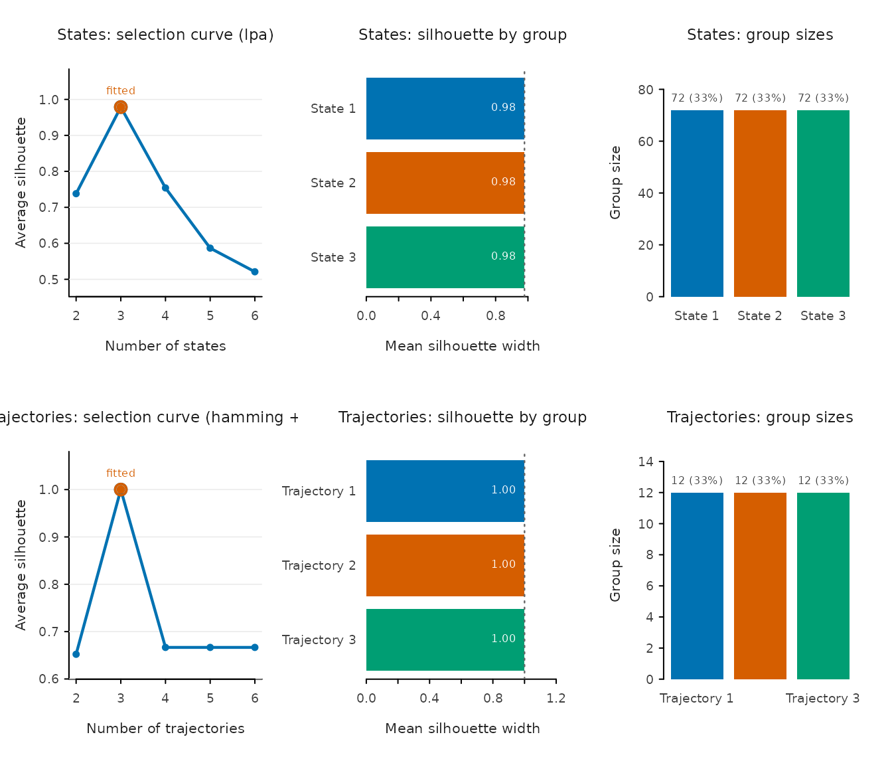
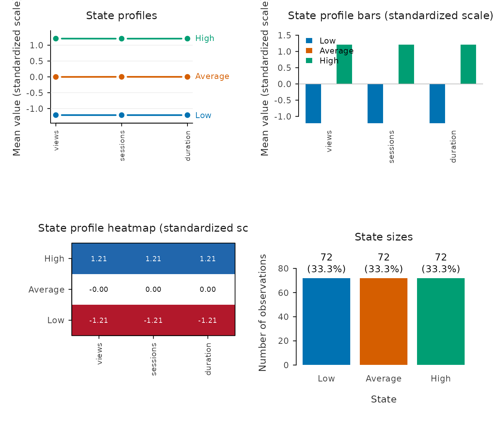
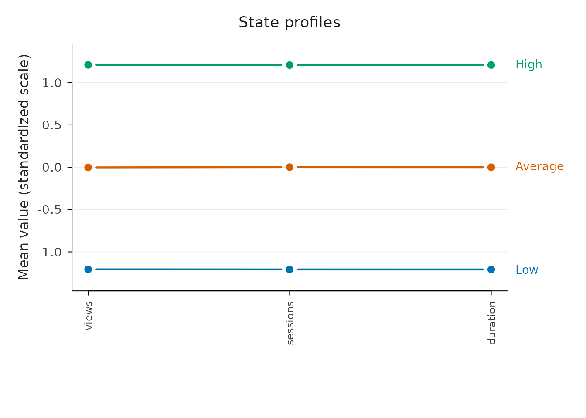
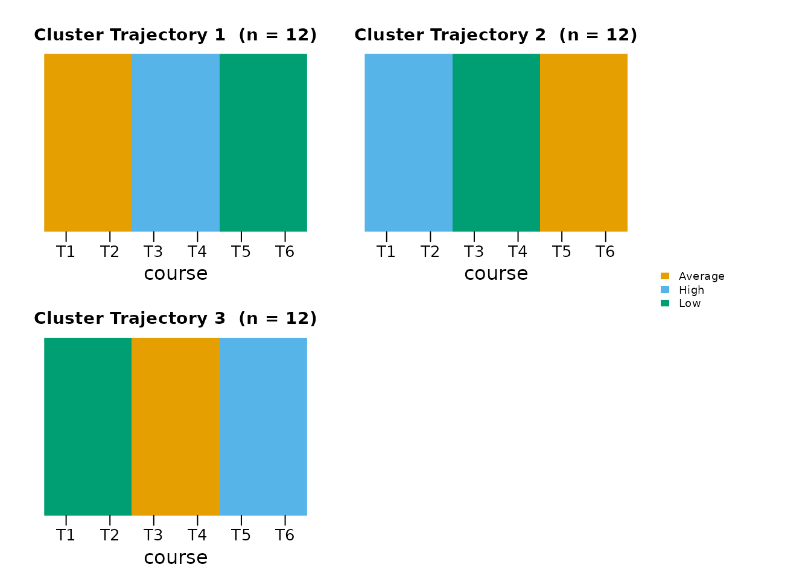
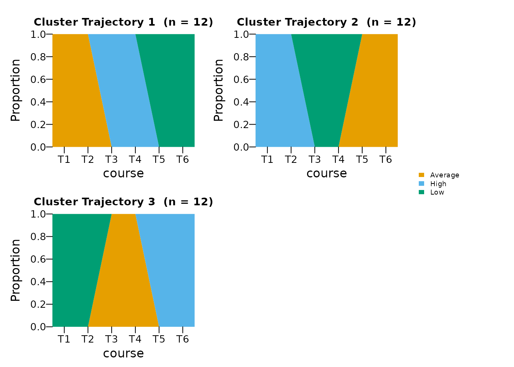
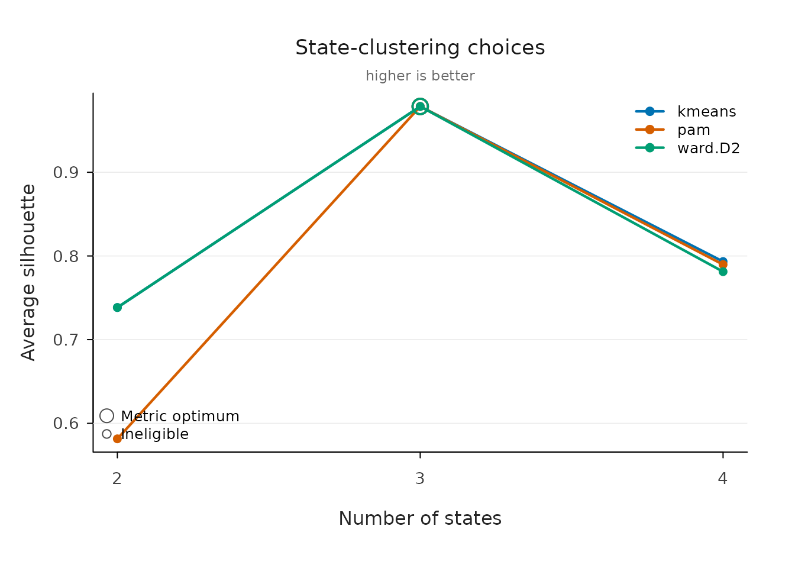
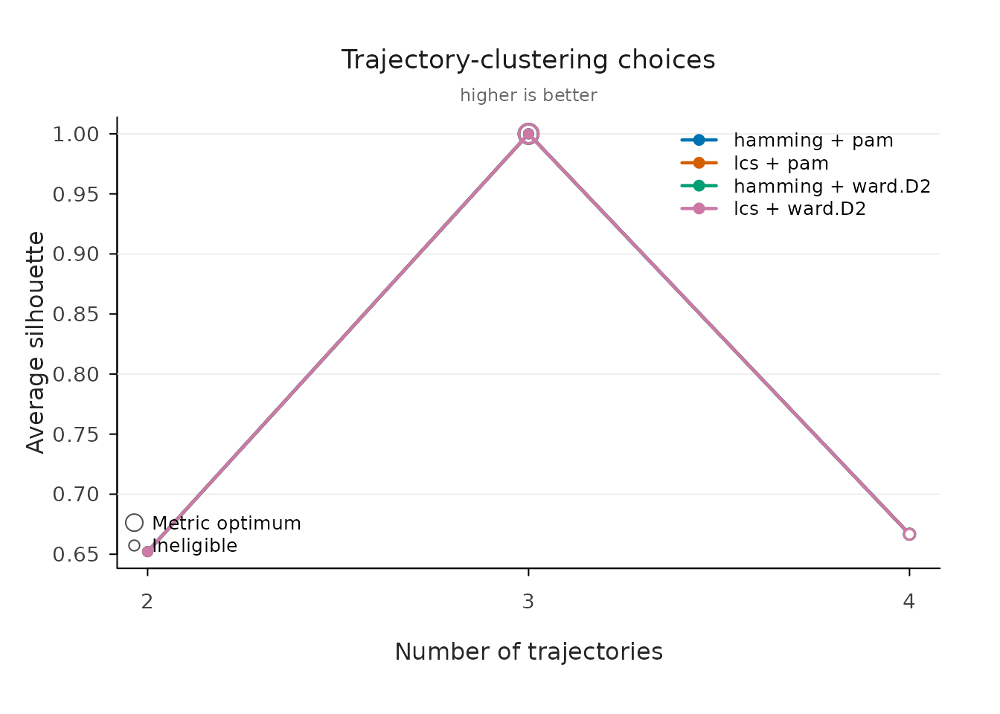

VaSStra turns repeated multivariate measurements into states, state sequences, and groups of similar trajectories. The whole analysis is one call, and every part of it can also be run as an explicit step.
library(VaSStra)
set.seed(2026)
data <- expand.grid(
student = seq_len(36),
course = seq_len(6)
)
trajectory <- ceiling(data$student / 12)
# Three groups of twelve students climb the same three-phase ladder,
# each starting one phase further along, so the groups differ in timing
# rather than in level.
phase <- ceiling(data$course / 2)
latent_state <- (phase + trajectory - 2) %% 3 + 1
data$views <- latent_state * 6 + rnorm(nrow(data), sd = 0.08)
data$sessions <- latent_state * 3 + rnorm(nrow(data), sd = 0.08)
data$duration <- latent_state * 12 + rnorm(nrow(data), sd = 0.08)One call
vasstra() detects the subject, time, and indicator roles
from common column names (or attached role metadata), compares two
through six states and trajectories, and fits the recommended counts.
Every automated decision is reported as it is made and recorded inside
the fit.
fit <- vasstra(data)
#> Detected id = "student", time = "course", variables = 3 numeric indicators.
#> Selected n_states = 3 (lpa, bic = -3020.208); see `diagnostics$selection`.
#> Selected n_trajectories = 3 (hamming + pam, silhouette = 1.000); see `diagnostics$selection`.
fit
#> VaSStra Analysis
#> 36 subjects | 6 times | 3 states | 3 trajectories
#> hamming + pam | silhouette 1.000Tidy tables come straight from the fit at the analysis unit you need:
head(as.data.frame(fit))
#> student trajectory n_observed unique_states transitions entropy complexity
#> 1 1 Trajectory 1 6 3 2 1 0.6324555
#> 2 2 Trajectory 1 6 3 2 1 0.6324555
#> 3 3 Trajectory 1 6 3 2 1 0.6324555
#> 4 4 Trajectory 1 6 3 2 1 0.6324555
#> 5 5 Trajectory 1 6 3 2 1 0.6324555
#> 6 6 Trajectory 1 6 3 2 1 0.6324555
#> volatility integrative_potential negative_exposure
#> 1 0.7 NA NA
#> 2 0.7 NA NA
#> 3 0.7 NA NA
#> 4 0.7 NA NA
#> 5 0.7 NA NA
#> 6 0.7 NA NA
head(as.data.frame(fit, unit = "observation"))
#> student course state position trajectory
#> 1 1 1 State 1 1 Trajectory 1
#> 2 1 2 State 1 2 Trajectory 1
#> 3 1 3 State 2 3 Trajectory 1
#> 4 1 4 State 2 4 Trajectory 1
#> 5 1 5 State 3 5 Trajectory 1
#> 6 1 6 State 3 6 Trajectory 1
as.data.frame(fit, unit = "trajectory")
#> trajectory n proportion mean_within_distance n_observed unique_states
#> 1 Trajectory 1 12 0.3333333 0 6 3
#> 2 Trajectory 2 12 0.3333333 0 6 3
#> 3 Trajectory 3 12 0.3333333 0 6 3
#> transitions entropy complexity volatility integrative_potential
#> 1 2 1 0.6324555 0.7 NaN
#> 2 2 1 0.6324555 0.7 NaN
#> 3 2 1 0.6324555 0.7 NaN
#> negative_exposure
#> 1 NaN
#> 2 NaN
#> 3 NaNName any decision to take it over; automation only fills what you
omit. Labels are the shortest way to fix a count — three labels mean
three states — and a candidate vector such as
n_states = 2:4 compares exactly those counts and fits the
recommended one.
Evaluate the clustering
evaluate() compares the fitted numbers of states and
trajectories against the neighboring counts and reports per-cluster
quality. Printing shows both tables; plotting draws the selection curve,
per-cluster silhouette widths, and group sizes.
evaluation <- evaluate(fit)
evaluation
#> VaSStra clustering evaluation: states (lpa)
#> Fitted: 3 states | silhouette 0.979
#> Candidates:
#> n_states method lpa_model silhouette bic aic
#> 2 lpa EEI 0.738 1252.237 1218.485
#> 3 lpa EEI 0.979 -3020.208 -3067.462
#> 4 lpa EEI 0.754 -3008.104 -3068.859
#> 5 lpa EEI 0.587 -2988.741 -3062.997
#> 6 lpa EEI 0.521 -2968.898 -3056.655
#> classification_entropy min_size max_size size_ratio eligible best fitted
#> 0.997 72 144 2 TRUE FALSE FALSE
#> 1.000 72 72 1 TRUE TRUE TRUE
#> 0.967 4 72 18 FALSE FALSE FALSE
#> 0.935 3 72 24 FALSE FALSE FALSE
#> 0.924 1 72 72 FALSE FALSE FALSE
#> Fitted states:
#> state n proportion silhouette
#> State 1 72 0.333 0.978
#> State 2 72 0.333 0.979
#> State 3 72 0.333 0.979
#>
#> VaSStra clustering evaluation: trajectories (hamming + pam)
#> Fitted: 3 trajectories | silhouette 1.000
#> Candidates:
#> n_trajectories dissimilarity method silhouette mean_within_distance min_size
#> 2 hamming pam 0.652 2.087 12
#> 3 hamming pam 1.000 0.000 12
#> 4 hamming pam 0.667 0.000 1
#> 5 hamming pam 0.667 0.000 1
#> 6 hamming pam 0.667 0.000 1
#> max_size size_ratio eligible best fitted
#> 24 2 TRUE FALSE FALSE
#> 12 1 TRUE TRUE TRUE
#> 12 12 FALSE FALSE FALSE
#> 12 12 FALSE FALSE FALSE
#> 12 12 FALSE FALSE FALSE
#> Fitted trajectories:
#> trajectory n proportion mean_within_distance silhouette
#> Trajectory 1 12 0.333 0 1
#> Trajectory 2 12 0.333 0 1
#> Trajectory 3 12 0.333 0 1
plot(evaluation)
The same verb works on a single step, with any candidate range:
state_evaluation <- evaluate(fit$states, n_states = 2:5)
as.data.frame(state_evaluation)
#> n_states method lpa_model silhouette bic aic
#> 1 2 lpa EEI 0.7380052 1252.237 1218.485
#> 2 3 lpa EEI 0.9786523 -3020.208 -3067.462
#> 3 4 lpa EEI 0.7539322 -3008.104 -3068.859
#> 4 5 lpa EEI 0.5866211 -2988.741 -3062.997
#> classification_entropy min_size max_size size_ratio eligible best fitted
#> 1 0.9974592 72 144 2 TRUE FALSE FALSE
#> 2 1.0000000 72 72 1 TRUE TRUE TRUE
#> 3 0.9670127 4 72 18 FALSE FALSE FALSE
#> 4 0.9354653 3 72 24 FALSE FALSE FALSE
summary(state_evaluation)
#> state n proportion silhouette
#> 1 State 1 72 0.3333333 0.9780484
#> 2 State 2 72 0.3333333 0.9789273
#> 3 State 3 72 0.3333333 0.9789813Tidy fit indices
fit_indices() reports the fit statistics of the selected
clustering as one tidy row, or one row per compared candidate with
compare = TRUE. LPA models report the complete
information-criterion family together with entropy and the extreme
average posterior class probabilities; hard-clustering methods report
their own objectives instead, and columns that do not apply are
dropped.
fit_indices(fit)
#> VaSStra fit indices: states (lpa)
#> n_states method lpa_model log_likelihood n_parameters aic bic
#> 3 lpa EEI 1547.73 14 -3067.46 -3020.21
#> sabic caic awe clc kic icl entropy prob_min
#> -3064.57 -3006.21 -2902.95 -3095.46 -3050.46 -3020.21 1 1
#> prob_max silhouette min_size max_size size_ratio
#> 1 0.979 72 72 1
fit_indices(fit, compare = TRUE)
#> VaSStra fit indices: states (lpa)
#> n_states method lpa_model log_likelihood n_parameters aic bic
#> 2 lpa EEI -599.24 10 1218.48 1252.24
#> 3 lpa EEI 1547.73 14 -3067.46 -3020.21
#> 4 lpa EEI 1552.43 18 -3068.86 -3008.10
#> 5 lpa EEI 1553.50 22 -3063.00 -2988.74
#> 6 lpa EEI 1554.33 26 -3056.66 -2968.90
#> sabic caic awe clc kic icl entropy prob_min
#> 1220.55 1262.24 1335.99 1199.25 1231.48 1253.00 0.997 1.000
#> -3064.57 -3006.21 -2902.95 -3095.46 -3050.46 -3020.21 1.000 1.000
#> -3065.14 -2990.10 -2857.35 -3085.10 -3047.86 -2988.35 0.967 0.829
#> -3058.45 -2966.74 -2804.48 -3062.13 -3038.00 -2943.87 0.935 0.730
#> -3051.29 -2942.90 -2751.14 -3049.93 -3027.66 -2910.17 0.924 0.770
#> prob_max silhouette min_size max_size size_ratio eligible best fitted
#> 1 0.738 72 144 2 TRUE FALSE FALSE
#> 1 0.979 72 72 1 TRUE TRUE TRUE
#> 1 0.754 4 72 18 FALSE FALSE FALSE
#> 1 0.587 3 72 24 FALSE FALSE FALSE
#> 1 0.521 1 72 72 FALSE FALSE FALSE
fit_indices(fit, step = "trajectories", compare = TRUE)
#> VaSStra fit indices: trajectories (hamming + pam)
#> n_trajectories dissimilarity method silhouette mean_within_distance min_size
#> 2 hamming pam 0.652 2.09 12
#> 3 hamming pam 1.000 0.00 12
#> 4 hamming pam 0.667 0.00 1
#> 5 hamming pam 0.667 0.00 1
#> 6 hamming pam 0.667 0.00 1
#> max_size size_ratio eligible best fitted
#> 24 2 TRUE FALSE FALSE
#> 12 1 TRUE TRUE TRUE
#> 12 12 FALSE FALSE FALSE
#> 12 12 FALSE FALSE FALSE
#> 12 12 FALSE FALSE FALSEName groups after inspecting them
set_labels() renames fitted states or trajectories in
place — nothing is refitted, no value changes — and the new names flow
through every table, sequence, and plot. Rename everything with a full
vector, or only some groups by name.
fit <- set_labels(
fit,
states = c("Low", "Average", "High"),
trajectories = c("Mostly high", "Mixed", "Mostly low")
)
summary(fit)
#> trajectory n proportion mean_within_distance n_observed unique_states
#> 1 Mostly high 12 0.3333333 0 6 3
#> 2 Mixed 12 0.3333333 0 6 3
#> 3 Mostly low 12 0.3333333 0 6 3
#> transitions entropy complexity volatility integrative_potential
#> 1 2 1 0.6324555 0.7 NaN
#> 2 2 1 0.6324555 0.7 NaN
#> 3 2 1 0.6324555 0.7 NaN
#> negative_exposure
#> 1 NaN
#> 2 NaN
#> 3 NaNThe same analysis in four explicit steps
Each step accepts the result of the previous step and also runs alone with the same automated defaults. Use the steps when intermediate results are needed, or when states come from another method.
states <- step1_states(data, n_states = 3,
labels = c("Low", "Average", "High"))
#> Detected id = "student", time = "course", variables = 3 numeric indicators.
sequences <- step2_sequences(states)
trajectories <- step3_trajectories(sequences, n_trajectories = 3)
description <- step4_describe(
trajectories,
positive_states = "High",
negative_states = "Low"
)
summary(description)
#> trajectory n proportion mean_within_distance n_observed unique_states
#> 1 Trajectory 1 12 0.3333333 0 6 3
#> 2 Trajectory 2 12 0.3333333 0 6 3
#> 3 Trajectory 3 12 0.3333333 0 6 3
#> transitions entropy complexity volatility integrative_potential
#> 1 2 1 0.6324555 0.7 0.3333333
#> 2 2 1 0.6324555 0.7 0.1428571
#> 3 2 1 0.6324555 0.7 0.5238095
#> negative_exposure
#> 1 0.5238095
#> 2 0.3333333
#> 3 0.1428571Existing states from LPA, LCA, or any other source enter at step 2:
pass a data frame whose state column is detected (or named with
state).
State plots
State results support profile, bar, heatmap, and size plots without adding a plotting dependency, plus a combined overview.
plot(states, type = "all")
plot(states, type = "profile")
Sequence and trajectory plots
Every plot containing state sequences is rendered by Nestimate:
plot(trajectories, type = "index")
plot(trajectories, type = "distribution")
Compare candidates in full detail
When automation should be replaced by an explicit comparison,
state_choices() and trajectory_choices() fit a
grid across methods and counts and return one tidy row per candidate.
Nothing is selected silently; pass the inspected
candidate_id to fit.
state_options <- state_choices(
data,
n_states = 2:4,
method = c("kmeans", "pam", "ward.D2")
)
#> Detected id = "student", time = "course", variables = 3 numeric indicators.
state_options
#> VaSStra state choices
#> 9 candidates | 9 successful | 3 recommended
#> candidate_id n_states method lpa_model recommendation_criterion silhouette
#> 2 3 kmeans <NA> silhouette 0.9786523
#> 5 3 pam <NA> silhouette 0.9786523
#> 8 3 ward.D2 <NA> silhouette 0.9786523
#> bic min_size eligible
#> NA 72 TRUE
#> NA 72 TRUE
#> NA 72 TRUE
plot(state_options, metric = "silhouette")
chosen_states <- fit_state_choice(
state_options,
n_states = 3,
method = "kmeans",
labels = c("Low", "Average", "High")
)fit_state_choice(state_options) with no selection fits
the recommended candidate; candidate_id remains available
for exact row selection.
Average silhouette is the common diagnostic across all methods;
larger values indicate better-separated groups. Recommendations identify
the best eligible candidate separately for each method rather than
declaring one algorithm universally best. LPA candidates are recommended
by conventional BIC, with AIC, silhouette, or native mclust ICL
available through lpa_criterion.
trajectory_options <- trajectory_choices(
step2_sequences(chosen_states),
n_trajectories = 2:4,
dissimilarity = c("hamming", "lcs"),
method = c("pam", "ward.D2")
)
trajectory_options
#> VaSStra trajectory choices (Nestimate)
#> 12 candidates | 4 recommended distance-method solutions
#> candidate_id n_trajectories dissimilarity method silhouette min_size eligible
#> 2 3 hamming pam 1 12 TRUE
#> 5 3 lcs pam 1 12 TRUE
#> 8 3 hamming ward.D2 1 12 TRUE
#> 11 3 lcs ward.D2 1 12 TRUE
plot(trajectory_options, metric = "silhouette")
Recommendations are made within each distance-method pair because mean within-trajectory distances are only comparable within one dissimilarity.
States default to mclust latent profiles ("EEI", tidyLPA
model 1); base R supplies k-means and hierarchical clustering,
cluster supplies PAM, and Nestimate supplies sequence
distances, trajectory clustering, and plots. No TraMineR plotting path
or dependency is required.